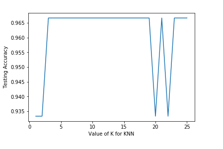

KNN
KNN (Using Scikit-Learn) Menggunakan Python pada Dataset Iris¶
KNN adalah metode yang hanya mengamati data seperti apa yang terletak paling dekat dengan yang ia coba prediksi. Ini kemudian mengklasifikasikan tempat menarik berdasarkan mayoritas orang di sekitarnya. Mari kita lihat algoritma ini beraksi dengan bantuan contoh sederhana. Di sini, kita akan menerapkan knn dengan pustaka sklearn Python dan melihat bagaimana mendapatkan hasil terbaik. Misalkan Anda memiliki dataset dengan duavariabel (bintang dan segi enam). Yang ketika diplot,terlihat seperti pada gambar berikut. Dan Anda harusmengklasifikasikan titik baru (lingkaran).
Di sini kita dapat melihat dalam lingkaran dengan k = 1 memiliki 1 poin yang harus diklasifikasikan. Dan selain itu satu titik lain yang sudah ada sebelumnya (yang kelasnya diketahui). Dalam k = 3 kita memiliki 3 titik yang sudah ada sebelumnya (jangan lupa untuk memasukkan segi enam di dalam k = 1 lingkaran).
k-NN adalah algoritma klasifikasi. Ini menggunakan nilai k (tunggu, kita akan membahas ini, untuk saat ini hanya perlu diingat bahwa k adalah nilai integer, bukan 0 atau negatif tho) dan mengukur jarak poin baru ke tetangga terdekat.
Ini kemudian memilih titik data k-terdekat. Dan berdasarkan pada titik-titik data terdekat itu memberikan kelas titik data mayoritas.
Apa itu "k"?¶
k sebenarnya adalah jumlah tetangga yang harus dipertimbangkan. Jadi, ketika memasang model dengan k = 3 menyiratkan bahwa tiga tetangga terdekat digunakan untuk memuluskan estimasi pada titik tertentu. Secara umum, ilmuwan data memilih sebagai angka ganjil jika jumlah kelasnya genap. Anda juga dapat memeriksa dengan membuat model pada nilai k yang berbeda dan memeriksa kinerjanya.
Nilai k yang kecil berarti bahwa kebisingan akan memiliki pengaruh yang lebih tinggi pada hasil dan nilai yang besar membuatnya mahal secara komputasi. Kami akan menggunakan beberapa nilai k di bagian implementasi kami untuk menentukan k terbaik di antara beberapa nilai.
KNN memiliki langkah-langkah dasar berikut:¶
- Hitung jarak
- Temukan tetangga terdekat
- Pilih label
Langkah - langkah Knn Python menggunakan Dataset Iris¶
Dataset Iris sebagai berikut :
- 150 observations
- 4 fitur (panjang sepal, lebar sepal, panjang kelopak, lebar kelopak)
- Response variable adalah spesies iris
- Classification problem since response bersifat kategoris.
langkah pertama :¶
Jadi, Mengimpor general libraries dan dataset Iris:
from sklearn.datasets import load_iris
#Create bunch object containing iris dataset and its attributes.
iris = load_iris()
type(iris)
Sekarang, mari kita periksa berapa banyak data yang kita miliki dan seperti apa tampilannya.
#Names of 4 features (column names)
print(iris.feature_names)
#Integers representing the species: 0 = setosa, 1=versicolor, 2=virginica
print(iris.target)
# 3 classes of target
print(iris.target_names)
print(type(iris.data))
print(type(iris.target))
# we have a total of 150 observations and 4 features
print(iris.data.shape)
# Feature matrix in a object named X
X = iris.data
# response vector in a object named y
y =iris.target
print(X.shape)
print(y.shape)
Langkah kedua:¶
Preprocessing, Train-test pembagian dan penskalaan fitur
First, mengimpor perpustakaan dan dataset.
Setelah itu , membagi data dalam label input dan output.
# splitting the data into training and test sets (80:20)
from sklearn.model_selection import train_test_split
X_train,X_test,y_train,y_test = train_test_split(X,y,test_size=0.2,random_state=4)
#shape of train and test objects
print(X_train.shape)
print(X_test.shape)
# shape of new y objects
print(y_train.shape)
print(y_test.shape)Langkah ketiga :¶
Membuat model menyesuaikan data.
Sekarang kita buat modelnya. Setelah itu data kami akan menampilkan output.
#import the KNeighborsClassifier class from sklearn
from sklearn.neighbors import KNeighborsClassifier
#import metrics model to check the accuracy
from sklearn import metrics
Langkah keempat :¶
menghitung tingkat akurasi.
#Try running from k=1 through 25 and record testing accuracy
k_range = range(1,26)
scores = {}
scores_list = []menghitung nilai K pada dataset Iris
for k in k_range:
knn = KNeighborsClassifier(n_neighbors=k)
knn.fit(X_train,y_train)
y_pred=knn.predict(X_test)
scores[k] = metrics.accuracy_score(y_test,y_pred)
scores_list.append(metrics.accuracy_score(y_test,y_pred))
#Testing accuracy for each value of K
print(scores)Menampilkan Grafik dengan Matplotlib
import matplotlib.pyplot as plt
#plot the relationship between K and the testing accuracy
plt.plot(k_range,scores_list)
plt.xlabel('Value of K for KNN')
plt.ylabel('Testing Accuracy')
plt.showknn = KNeighborsClassifier(n_neighbors=5)
knn.fit(X,y)
##
#0 = setosa, 1=versicolor, 2=virginica
classes = {0:'setosa',1:'versicolor',2:'virginica'}
#Making prediction on some unseen data
#predict for the below two random observations
x_new = [[3,4,5,2],
[5,4,2,2]]
y_predict = knn.predict(x_new)
print(classes[y_predict[0]])
print(classes[y_predict[1]])
##Grafik matplotlib dari dataset Iris :

References¶
[[1] https://www.datacamp.com/community/tutorials/k-nearest-neighbor-classification-scikit-learn]: https://www.datacamp.com/community/tutorials/k-nearest-neighbor-classification-scikit-learn
[[2] https://engineering.eckovation.com/knn-introduction-implementation-using-scikit-learn/]: https://engineering.eckovation.com/knn-introduction-implementation-using-scikit-learn/